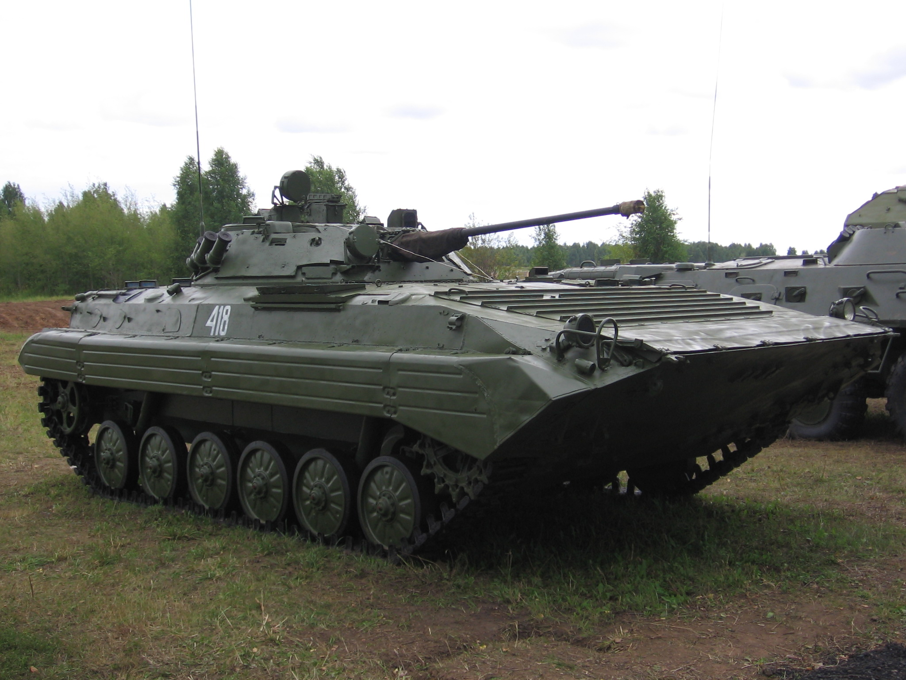

БМП-1 — советская гусеничная боевая машина пехоты. Первая в мире серийная боевая машина пехоты плавающая[2], предназначенная для транспортировки личного состава к месту выполнения боевой задачи, повышения его мобильности и защищённости и поддержки огнём и для совместных действий с танками в бою. Была разработана в ГСКБ-2 (главном специальном конструкторском бюро 2) на Челябинском тракторном заводе им. В. И. Ленина для замены БТР-50П[3][4]. Боевая машина принята на вооружение Советской Армии ВС СССР в 1966 году. Серийно выпускалась с 1966 по 1983 год[5]. Впоследствии чертежи и прочая документация переданы на Курганский машиностроительный завод, где впоследствии выпускалась и БМП-2.
БМП-2 (индекс ГБТУ — Объект 675) — советская и российская гусеничная боевая машина пехоты, предназначенная для транспортировки личного состава к переднему краю, повышения его мобильности, вооружённости и защищённости на поле боя в условиях применения ядерного оружия и совместных действий с танками в бою. Основное отличие от БМП-1 состоит в более крупной башне и оснащении другим комплексом вооружения. Башня вмещает двух человек: командира отделения (справа) и наводчика-оператора. Основное вооружение — автоматическая 30-мм пушка 2А42, изготовляемая на Тульском машиностроительном заводе. БМП-2 принята на вооружение ВС Союза ССР в 1980 году 15 октября. Впервые боевую машину пехоты продемонстрировали широкой публике в Москве на параде на Красной площади 7 ноября 1982 года.